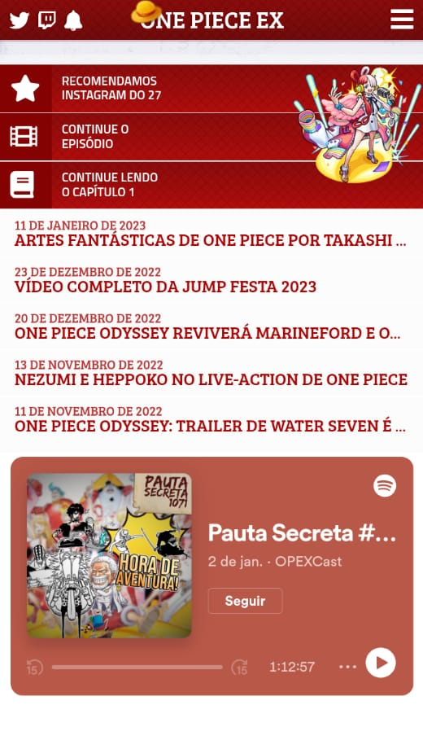
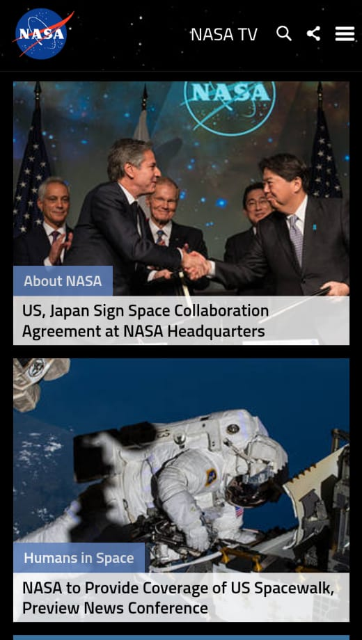

Repetition
Opex
onepieceex.net This is a fan-made One Piece anime site, where we can see the principle of repetition being used a lot. The principle of repetition consists of repeating a single element several times. Here we can see the repetition of white icons on a red background. We can also see the red color in the fonts being used on white backgrounds, accompanied by a lighter red color. There is also a repetition of a rectangle after the header containing shortcuts for the user.
Alignment
NASA
nasa.gov This is NASA's website and we can see the principle of alignment there. Alignment brings order to elements and connects them, making content more organized and easier to view. On this site, due to the alignment, we can see all the news below lined up on the screen as we scroll down.
Contrast
Amazon
amazon.comOn the Amazon website, there are many design principles that we can observe. One is the contrast. Contrast is important so that the letters are legible against a given background, with fonts that, in addition to adding beauty to the content, make it easy to see. With contrast, it is possible to draw the user's attention to a specific item. In this case, above the sofa image, the black letters on a light colored background draw our attention to the product and the offer.